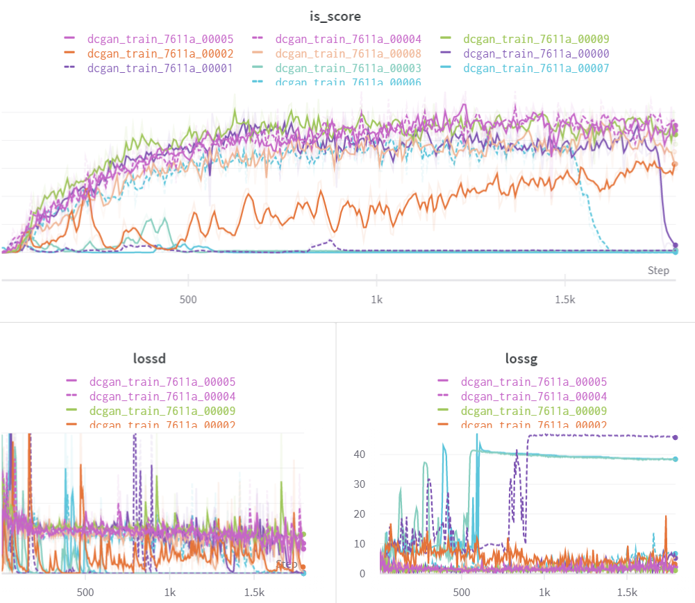
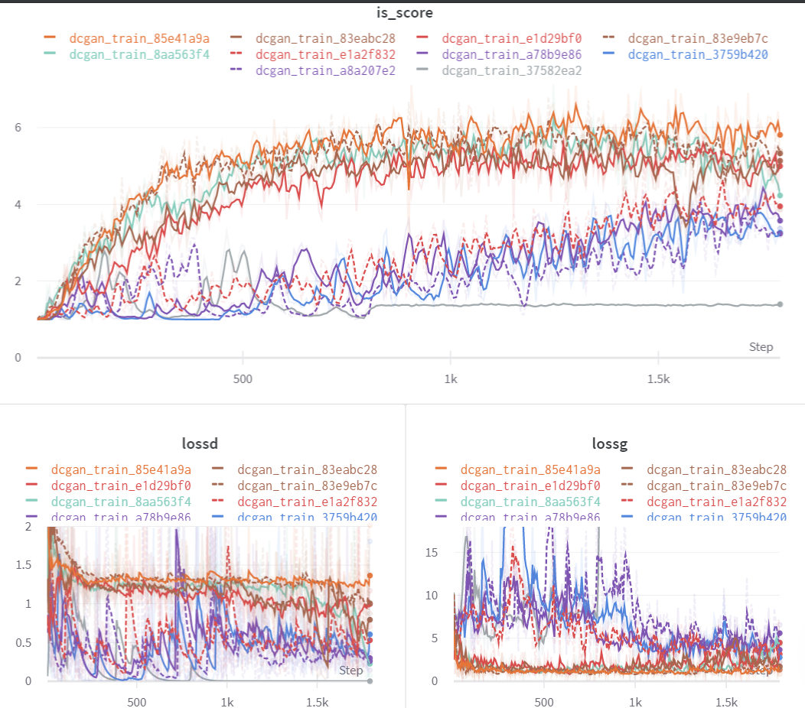
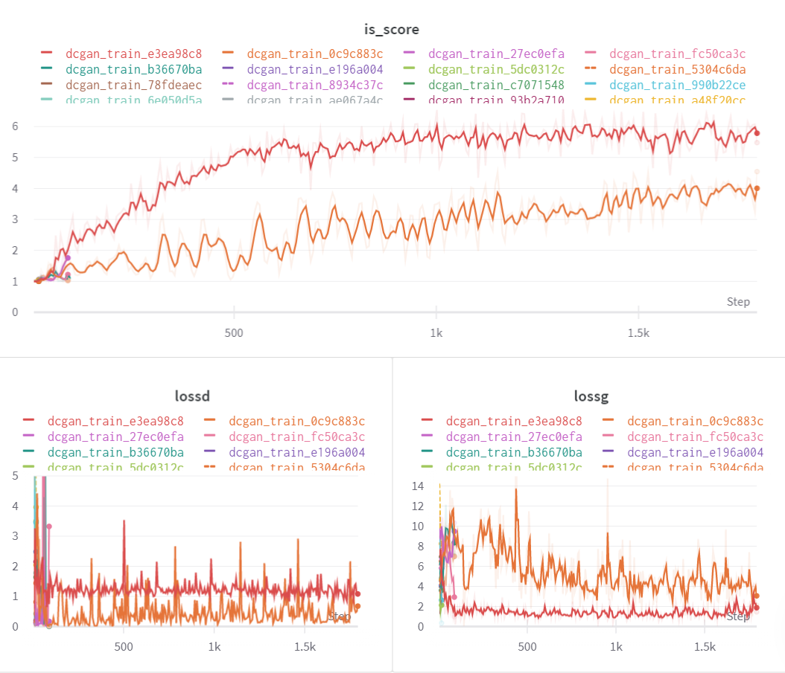
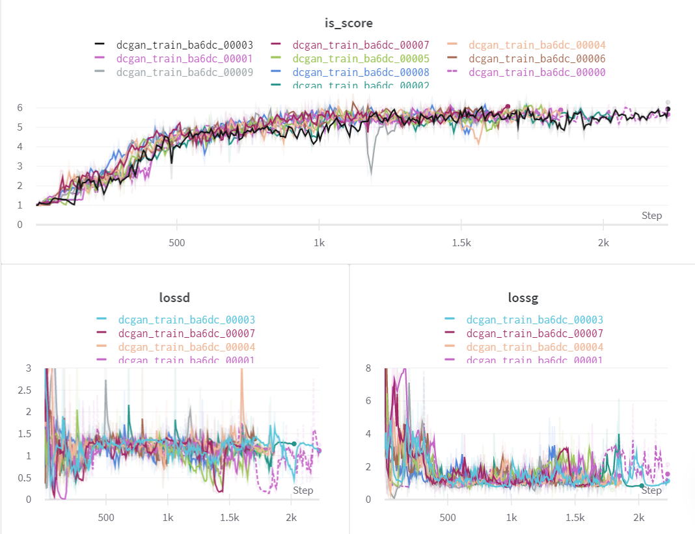
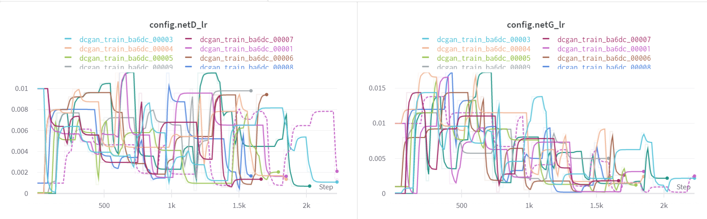
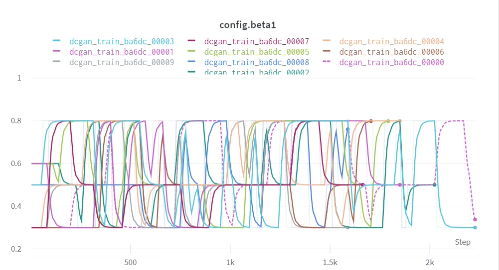
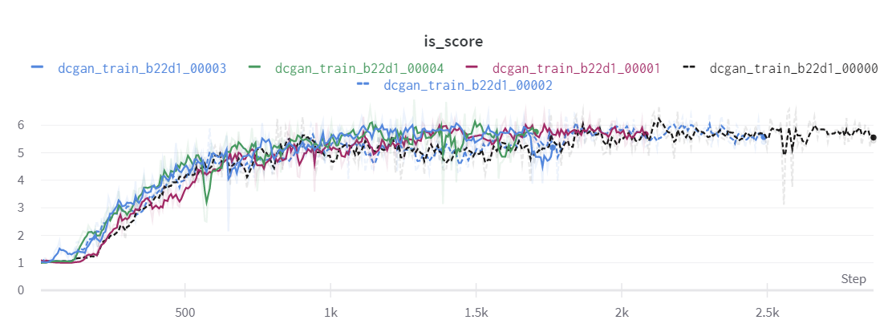
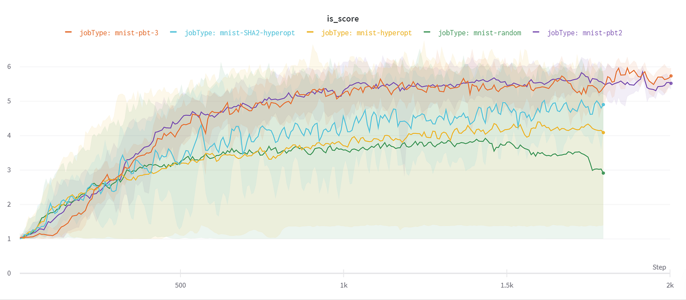

In this post, we’ll compare the following hyper-parameter optimization methods.
- Random Search
- Bayesian Search using HyperOpt
- Bayesian Search combined with Asynchronous Hyperband
- Population-Based Training
Experiment
we’ll train a simple DCGAN on the MNIST dataset and optimize the model for maximizing the inception score.
We’ll use Ray Tune to perform these experiments and track the results on the W&B dashboard.
I also did a video on my channel that goes in-depth in explaining this experiment -
The Search Space
We’ll use the same search space for all the experiments in order to make the comparison fair.
config = {
"netG_lr": lambda: np.random.uniform(1e-2, 1e-5),
"netD_lr": lambda: np.random.uniform(1e-2, 1e-5),
"beta1": [0.3,0.5,0.8]
}Let’s perform a random search across the search space to see how well it optimizes. This will also act as the baseline metric for our comparison. Our experimental setup has 2 GPUs and 4 CPUs. We’ll parallelize the operation across multiple GPUs. Ray Tune does this automatically for you if you specify the resources_per_trail.
analysis = tune.run(
dcgan_train,
resources_per_trial={'gpu': 1,'cpu':2}, # Tune will use this information to parallelize the tuning operation
num_samples=10,
config=config
)Let’s see the results

Inference
As expected, we get varied results.
- Some of the models did optimize as the tuner got lucky and chose the right set of hyper-parameters
- but some models’ inception score graph remained flat as they did not optimize due to bad hyper-parameter values.
- Thus, when using a random search, you might end up reaching the optimal value but you definitely end up wasting a lot of resources on the runs that don’t add any value.
The basic idea behind Bayesian Hyperparameter tuning is to not be completely random in your choice for hyper-parameters but instead use the information from the prior runs to choose the hyperparameters for the next run. Tune supports HyperOpt which implements Bayesian search algorithms. Here’s how you do it.
Here’s what results look like

Inference
- There are significant improvements compared to the previous run as there is only 1 flat curve.
- This implies that the search algorithm chose the hyper-parameter values based on the results of previous runs.
- On average, the runs performed better than random search
- Resource wastage can be avoided by terminating the bad runs earlier.
The idea Asynchronous Hyperband is to eliminate or terminate the runs that don’t perform well. It makes sense to combine this method with the Bayesian search to see if we can further reduce the wastage of resources on the runs that don’t optimize. We just need to make a small change in our code to accommodate Hyperband.
Let us now see how this performs

Inference
- Only 2 out of 20 runs were executed for defined epochs while others were terminated earlier.
- The highest accuracy achieved was still slightly higher than the runs without the Hyperband scheduler.
- Thus, by terminating bad runs early on in the training process, we have not only speeded up the tuning job but also saved compute resources.
!Image source — [https://wandb.ai/wandb/DistHyperOpt/reports/Modern-Scalable-Hyperparameter-Tuning-Methods--VmlldzoyMTQxODM](img/05.png)

The last tuning algorithm that we’ll cover is population-based training (PBT) introduced by Deepmind research. The basic idea behind the algorithm in layman terms:
- Run the optimization process for some samples for a given time step(or iterations) T.
- After every T iterations, compare the runs and copy the weights of good performing runs to the bad performing runs and change their hyper-parameter values to be close to the values of the runs that performed well.
- Terminate the worst-performing runs. Although the idea behind the algorithm seems simple, there is a lot of complex optimization math that goes into building this from scratch. Tune provides a scalable and easy-to-use implementation of the SOTA PBT algorithm
Let us now look at the results.

Inference
The results look quite surprising. There are multiple factors that are unique about these results.
- Almost all the runs have reached the optimal point
- The highest score( of 6.29) was achieved by one of the runs
- The runs that started off as bad performers or outliers have also converged as the experiment proceeded.
- There are no runs that have a flat inception score graph
- Some bad performing runs were stopped in the middle of the process
- Thus, no resource has been wasted on bad runs
The answer is the hyper-parameter mutation done by the PBT scheduler. After every T time steps, the algorithm also mutates the values of hyper-parameters to maximize the desired metric. Here's how the parameters were mutated by the PBT scheduler for this experiment.
Let us now see how the hyper-parameters were adjusted by the PBT algorithm to maximize the inception score


- The hyper-parameter values are constantly adjusted throughout the experiment.
- The runs that start off with a bad hyper-parameter value are soon updated.
- PBT operates on explore and exploit methodology exploring the space for good parameter values and exploits by updating the bad runs.
We’ll now reduce the number of runs to 5 in order to make things difficult for PBT. Let’s see how it performs under this restricted circumstance.

- Even after reducing the number of runs to 5, PBT optimizer still outperforms random search and bayesian optimization.
- As expected, the bad performing runs were terminated early on in the training process
Here’s how the final comparison of the average inception scores looks like. We’ve averaged across 5 run sets:
- Random Search — 10 Runs ( Job Type — mnist-random)
- Bayesian Search — 10 Runs ( Job Type — mnist-hyperopt)
- Bayesian Search with Hyperband — 20 Runs (Job Type- mnist-SHA2-hyperopt)
- PBT scheduler — 10 Runs (Job Type — mnist-pbt2)
- PBT scheduler — 5 Runs (Job Type — mnist-pbt3)

If you enjoyed reading this, you can follow me on twitter to get more updates. I also make deep learning videos on my youtube channel.